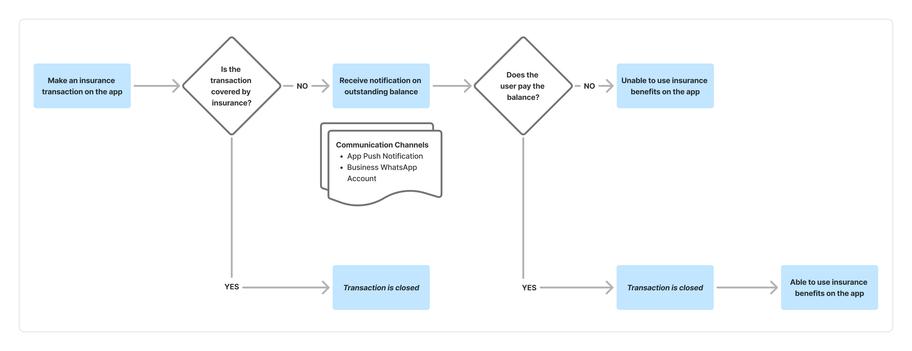

Bill settlement user journey · Before changes FeaturedRethinking repayment communication
Why were health insurance repayments low? Research uncovered mistrusted messages and a bug. Changes were followed by improved repayment and notification open rates.
Approach: User interview.
Explore the case